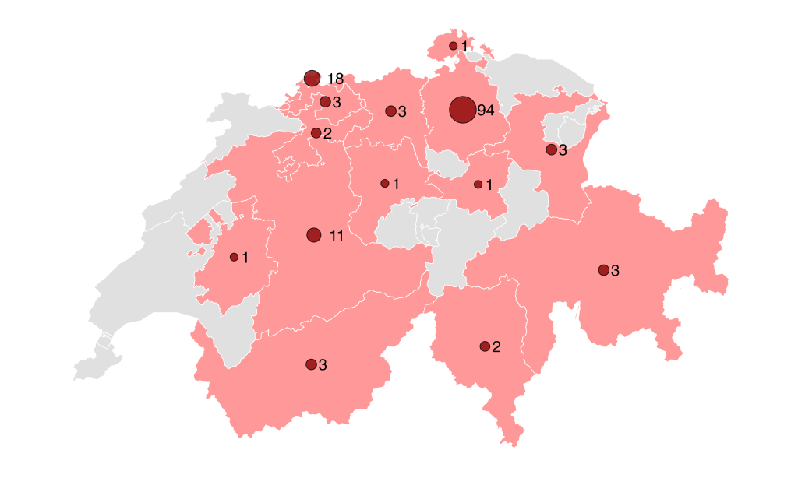
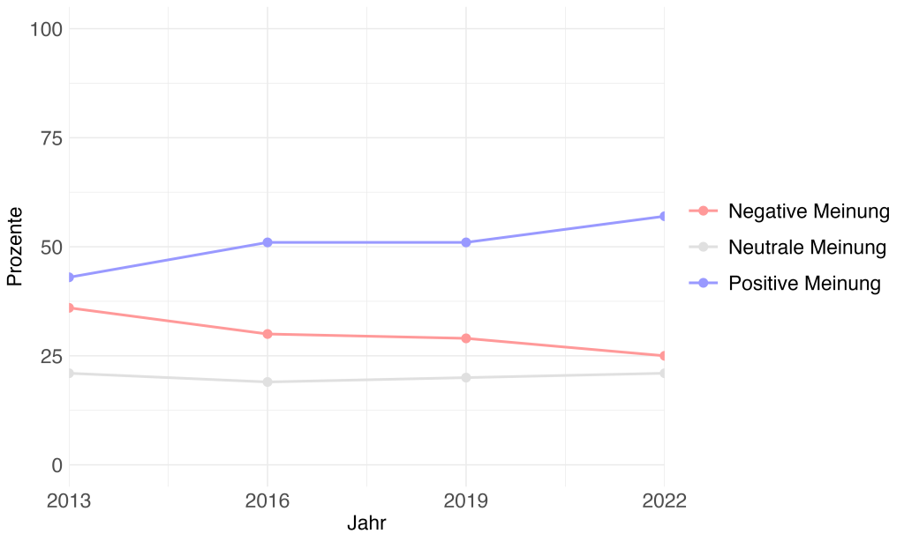
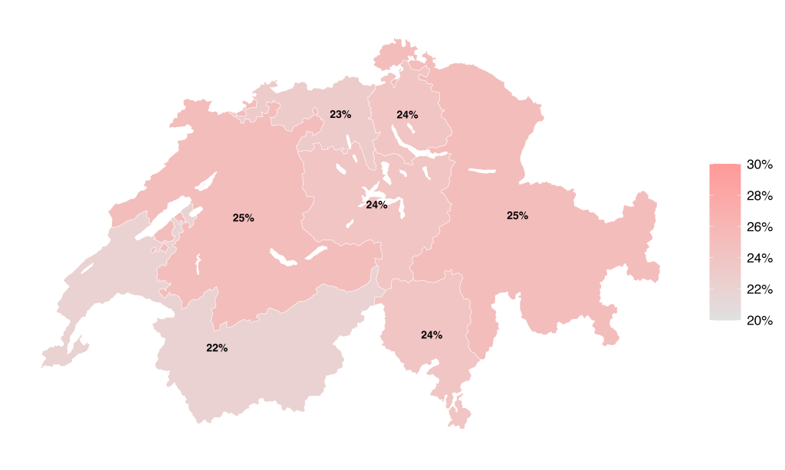
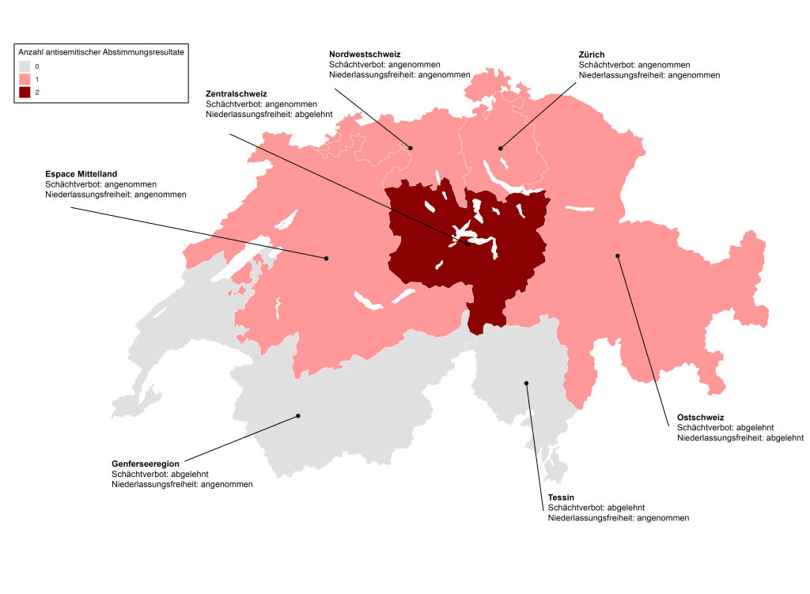
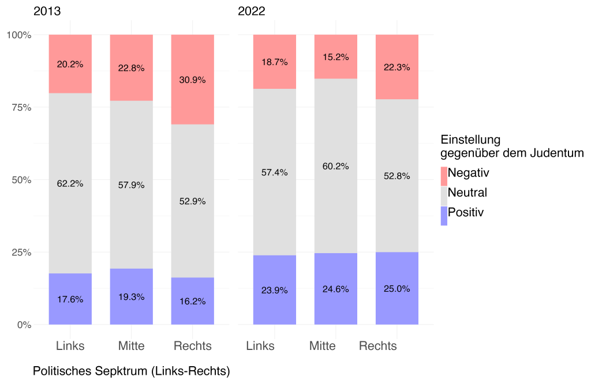

Obwohl antisemitische Vorfälle zunehmen, spiegelt die Stimmung der Schweizer Bevölkerung eine andere Realität wider. Die Einstellung gegenüber dem Judentum hat sich in den letzten Jahren verbessert. Es sind viel mehr Minderheiten, die das Bild nach aussen bestimmen.

Im Jahr 2023 wurde mit 146 dokumentierten antisemitischen Vorfällen (Online-Vorfälle nicht miteinbezogen) ein trauriger Rekord erreicht, eine Entwicklung, die sich bereits im Vorfeld abzeichnete (1). Zwischen 2018 und 2021 stieg die Anzahl der Vorfälle um 64%. Die Dunkelziffer dürfte jedoch höher liegen, da nicht alle antisemitischen Übergriffe als solche erfasst werden. Doch spiegelt dieser Trend die tatsächliche Stimmungslage der Schweizer Bevölkerung gegenüber dem Judentum wider? Oder handelt es sich um eine Minderheit, die durch ihre Taten das Bild nach aussen verzerrt?
Antisemitische Vorfälle in der Schweiz werden vom Schweizerisch Israelischen Gemeindebund (SIG) (2) erfasst, der die Definition der International Holocaust Remembrance Alliance (IHRA) (3) verwendet.
Stimmungslage in der Schweiz
Im Rahmen des Schweizer Haushalt-Panels wurde die Einstellung der Schweizer Bevölkerung gegenüber dem Judentum anhand einer Stichprobe erhoben (4). Darauf aufbauend wurde im Rahmen dieser Recherche der Anteil der Schweizer*innen mit einer negativen Einstellung gegenüber dem Judentum berechnet.
Auf der nationalen Ebene ergibt sich ein Wert von 24%. Demnach vertritt rund ein Viertel der Schweizer Bevölkerung im Jahr 2022 eine zumindest leicht abgeneigte Einstellung gegenüber dem Judentum. Analysiert man die Stimmungslage im Zeitraum 2013-2022 zeigt sich ein deutlicher Trend. Der Anteil an Personen mit negativer Einstellung gegenüber dem Judentum geht in den letzten Jahren zurück. Zu dieser Erkenntnis kam auch das Bundesamt für Statistik in einer 2023 veröffentlichten Studie (5). Dieser Trend verläuft entgegengesetzt dem generellen Anstieg an antisemitischen Vorfällen in der Schweiz.

Die Genferseeregion als positiver Ausreisser
Betrachtet man die einzelnen Grossregionen der Schweiz, zeichnet sich ein tendenziell rückläufiger Trend von Ost nach West ab. In der Genferseeregion leben im regionalen Vergleich viele Jüdinnen und Juden (0.4% der Bevölkerung), allerdings findet sich dort auch ein Tiefstwert im Rahmen dieser Schätzung. Hingegen gehören in der Ostschweiz 0.08% zur jüdischen Gemeinschaft, dennoch sind es ca. 25% der Bevölkerung mit einer negativen Haltung. Es scheint, als basiere diese Ablehnung verstärkt auf Vorurteilen und weniger aufgrund konkreter Berührungspunkte. Die Genferseeregion stellt aber auch hinsichtlich der gemeldeten antisemitischen Vorfälle eine Ausnahme dar. Obwohl der Anteil an Juden und Jüdinnen im Vergleich hoch ist, werden dort sehr wenige antisemitische Vorfälle gemeldet. In Städten wie Zürich und Basel, mit einem ähnlich hohen Bevölkerungsanteil kam es hingegen zu einem starken Anstieg an Delikten. Es scheint, als wäre die jüdische Gemeinschaft in der Westschweiz stärker in die Gesamtbevölkerung integriert, als dies an anderen Orten der Fall ist. Dies, obwohl Genf, Basel und Zürich bereits seit Beginn des 20. Jahrhunderts Zentren des jüdischen Lebens in der Schweiz sind (6).

Historisch gewachsene Strukturen?
Beim Versuch nachzuvollziehen, ob es sich bei diesen regionalen Unterschieden um eine Entwicklung der letzten Jahre handelt, oder ob sie zurückzuführen sind auf historisch gewachsene Strukturen, ist ein Blick in die Vergangenheit nötig.
Die Volksabstimmung zur Niederlassungsfreiheit (1866) und die Volksinitiative «für ein Verbot des Schlachtens ohne vorherige Betäubung» (1893) waren die letzten nationalen Abstimmungskämpfe, die klar mittels antisemitischen Narrativen geführt wurden (7,8). Es war von der «jüdischen Landplage» und dem Verlust des «christlichen Staatscharakter» die Rede (9).

Anhand dieser Abstimmungen lässt sich ein Stimmungsbild gegenüber dem Judentum in der Schweiz zu dieser Zeit aufzeigen. Die Ablehnung der Vorlage zur Niederlassungsfreiheit und die Annahme des sogenannten Schächtverbots zeugen von einem antisemitischen Mobilisierungspotential (9,10). In der Grafik 4 werden sie als «Antisemitische Abstimmungsresultate» erfasst. Interessant ist, dass sich in der Genferseeregion und im Tessin bei keiner der beiden Abstimmungen eine judenfeindliche Mehrheit mobilisieren liess. Gemäss der aktuellen Stimmungslage scheinen diese regionalen Unterschiede, zumindest in Bezug auf die Genferseeregion, bis heute zu bestehen.
Wahrscheinlichkeiten untermauern regionale Unterschiede
Mittels statistischer Modellberechnung konnte nachgewiesen werden, dass es reale Unterschiede zwischen den verschiedenen Grossregionen in der Schweiz gibt. Im Vergleich zur Genferseeregion konnte für fast alle anderen Regionen, ausgenommen Zürich und Tessin, ein positiver Effekt berechnet werden. Man stelle sich vor, es existieren zwei Menschen mit identischen Attributen. Eine Person davon lebt in Genf die andere in Bern. Dennoch wäre die errechnete Wahrscheinlichkeit einer negativen Haltung gegenüber dem Judentum für die Person aus Genf tiefer. Die Genferseeregion stellt somit tatsächlich einen Ausreisser im positiven Sinne dar.
Eine gesellschaftliche Entwicklung mit unterschiedlicher Geschwindigkeit
Um die Entwicklung dieser Stimmungslage besser zu verstehen, muss man versuchen nachzuvollziehen, ob es sich um ein gesamtgesellschaftliches Phänomen handelt. Eine Herangehensweise ist die Unterteilung nach individueller politischer Selbsteinordnung. Wenn man das politische Links-Rechts-Spektrum in drei Gruppen unterteilt, zeigt sich ein interessantes Muster. Im Jahr 2013 lässt sich noch eine stufenartige Verteilung von Personen mit negativer Einstellung von links nach rechts erkennen. Diese Verteilung verändert sich jedoch im Laufe der Zeit.
In der Stichprobe von 2022 zeigte sich erstmals ein höherer Anteil an Personen mit negativer Einstellung in der politischen Linken im Vergleich zur politischen Mitte. In allen drei Gruppen nimmt der Anteil der Personen mit negativer Haltung ab. Diese Entwicklung ist links der politischen Mitte allerdings am schwächsten spürbar.

Die bestehende Ablehnung gegenüber dem Judentum ist demnach zunehmend in gleichem Masse an den politischen Rändern erkennbar und scheint insgesamt weniger ausgeprägt in der Westschweiz. Zur weiteren Analyse wurden diese Beobachtungen anhand eines statistischen Modells überprüft.
Polarisierung hin zum Rand
Es konnte gezeigt werden, dass die politische Selbsteinordnung einen Einfluss auf die Wahrscheinlichkeit hat, eine negative Haltung gegenüber dem Judentum zu vertreten. In anderen Worten, je stärker ich mich einer politischen Randgruppe zuordne, desto höher ist die errechnete Wahrscheinlichkeit, eine negative Haltung gegenüber dem Judentum zu vertreten. Wichtig ist zu betonen, dass dieser Effekt im Jahr 2013 noch verstärkt am rechten Pol auftritt.
Im Zeitraum 2013-2022 verändert sich der Zusammenhang. Die Wahrscheinlichkeiten an beiden politischen Polen gleichen sich an. Dadurch bestätigt sich die Vermutung, dass eine ablehnende Haltung gegenüber dem Judentum mittlerweile in einem zunehmend ähnlichen Umfang an beiden politischen Polen zu finden ist.
Stimmungslage und Aussenwirkung
Es zeigt sich, dass die gestiegene Anzahl an antisemitischen Vorfällen nicht mit einer generellen Entwicklung der Stimmungslage gegenüber dem Judentum in der Schweiz gleichgesetzt werden darf. Daten aus den letzten Jahren haben belegt, dass die ablehnende Haltung gegenüber dem Judentum abnimmt. Heutzutage findet sich diese Einstellung in einem zunehmend ausgewogenen Verhältnis an den politischen Polen wieder. Dabei scheinen regionale Unterschiede aus der Vergangenheit weiterhin bestehen zu bleiben.
Abschliessend ist darauf hinzuweisen, dass die erhobenen Daten zur Stimmungslage gegenüber dem Judentum vor dem 7. Oktober 2023 erhoben wurden. Es bleibt abzuwarten, ob es durch die Eskalation im Nahen Osten zu einer nachhaltigen Veränderung der Stimmungslage gegenüber dem Judentum in der Schweiz gekommen ist
Referenzen
- Amnesty International Schweiz [Internet]. [zitiert 19. Juni 2024]. «Es gab einen Dammbruch». Verfügbar unter: https://www.amnesty.ch/de/ueber-amnesty/publikationen/magazin-amnesty/2021-2/es-gab-einen-dammbruch
- Schweizerischer Israelitischer Gemeindebund (SIG) [Internet]. [zitiert 26. Juni 2024]. Verfügbar unter: https://swissjews.ch/de/
- SIG / FSCI [Internet]. [zitiert 17. Juni 2024]. IHRA-Antisemitismusdefinition. Verfügbar unter: https://swissjews.ch/de/themen/antisemitismus/ihra/
- Schweizer Haushalt-Panel | FORS [Internet]. 2018 [zitiert 26. Juni 2024]. Verfügbar unter: https://forscenter.ch/projekte/swiss-household-panel/?lang=de
- Bundesamt für Statistik [Internet]. [zitiert 26. Juni 2024]. Einstellungen gegenüber bestimmten Personengruppen. Verfügbar unter: https://www.bfs.admin.ch/bfs/de/home/statistiken/bevoelkerung/migration-integration/zusammenleben-schweiz/einstellungen-zielgruppen.html
- SIG / FSCI [Internet]. [zitiert 13. August 2024]. Geschichte der Jüdinnen und Juden in der Schweiz. Verfügbar unter: https://swissjews.ch/de/juedischesleben/geschichte/
- Pauchard OP Olivier. Als die Schweizer den Juden dieselben Rechte einräumten [Internet]. SWI swissinfo.ch. 2016 [zitiert 5. Juni 2024]. Verfügbar unter: https://www.swissinfo.ch/ger/demokratie/150-jahre-gleichberechtigung_als-die-schweizer-den-juden-dieselben-rechte-einraeumten/41911098
- Meyer B. Blog zur Schweizer Geschichte – Schweizerisches Nationalmuseum. 2019 [zitiert 17. Juni 2024]. Schächtverbot. Verfügbar unter: https://blog.nationalmuseum.ch/2019/11/schaechtverbot-fuer-schweizer-juden/
- 130 Jahre Schächtverbot: Zwischen Tierschutz und Judenhass [Internet]. [zitiert 15. Juni 2024]. Verfügbar unter: http://www.kirchenbote-online.ch/artikel/130-jahre-schaechtverbot-zwischen-tierschutz-und-judenhass/
- Süess P. Blog zur Schweizer Geschichte – Schweizerisches Nationalmuseum. 2019 [zitiert 26. Juni 2024]. Keine Niederlassungsfreiheit für Juden. Verfügbar unter: https://blog.nationalmuseum.ch/2019/04/keine-niederlassungsfreiheit-fuer-juden/